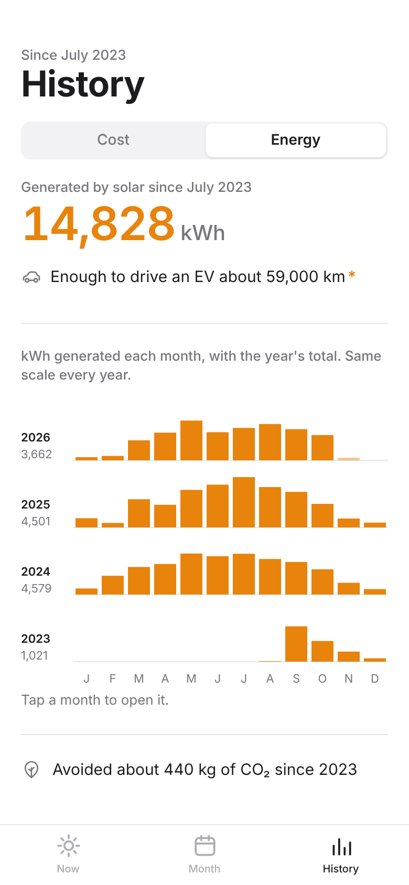
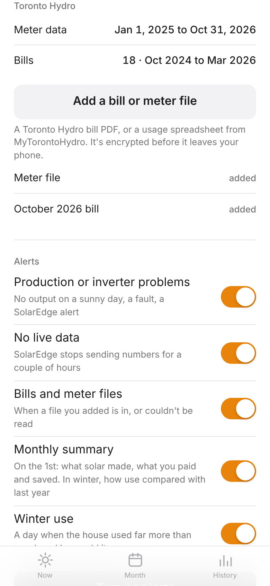

A private app for one home: what the panels make, what power costs, and what solar saves.
Solar joins two sources that never talk to each other: the SolarEdge inverter on the house (17 panels, 7.7 kW) and Toronto Hydro's meter readings and bills. It works out Ontario's net metering rules the way the bills do, so the savings are real dollars, checked against every bill on file. It opens to three tabs, Now, Month and History, and runs from the iPhone Home Screen.
NowWhat the panels are making, today so far against the expected curve, sunrise and sunset, weather and the totals since 2023. A dot shows the system's health.MonthWhat you paid and what solar saved, with what the month would have cost without it. Every day split into grid and solar. Tap a day or open the bill.HistoryEvery month since the panels went in, one row per year on one scale. Switch between cost and energy. Paler bars are estimates.
At a glance (sample figures)
14,828kWh generated since August 2023
$2,219saved by solar, about 22% off the power bill
EveryToronto Hydro bill checked line by line against the meter
1 hrbetween updates, with alerts when something's wrong

EnergyWhat the panels generated, with an EV comparison and the CO₂ avoided.

SettingsAdd a bill or meter file from the phone, and choose which alerts to get.
Live from the inverter
Power now, today's output and the expected curve, which levels off at the inverter's 6 kW limit. At night a small moon shows the real phase; tap it for its name.
Costs that match the bills
Credits for power sent back are valued at the time-of-use price when it went out, delivery is charged on net use, and HST and the Ontario rebate are applied as Toronto Hydro does. Months without a bill are estimated from the meter, usually within a few percent.
Bills and meter data
Add a bill PDF or a MyTorontoHydro spreadsheet from Settings. It's encrypted on the phone, read by the next update, and a bill is only added if its lines add up to the printed total. The PDF itself is never kept.
Alerts
Phone notifications when production stops on a sunny day or the inverter reports a fault, when SolarEdge stops sending data, when a file is added, a summary on the 1st of each month, and in winter, days of unusually heavy use with the temperature.
Private by design
All data is encrypted with a passphrase before it's published. Unlock with the passphrase, or with Face ID on a trusted phone. Serial numbers and tokens live only inside the encrypted data.
Your system
Panels, optimizers, inverter, rapid shutdown switch, meter and installer, with serial numbers for warranty or service, and what to do in an emergency.
How it runs
A scheduled job on GitHub fetches SolarEdge and the weather about every hour, reads any new files, rebuilds the site on GitHub Pages and sends alerts. There's no server to maintain.
Good to know
Toronto Hydro meter data comes from exported files, so costs trail by however long it's been since the last one. SolarEdge has no per-panel data in its public API, and live house use would need a consumption meter.
Coming next
Ask: a tab for questions about the house's energy and bills in plain words, by typing or by voice, answered from the app's own data.